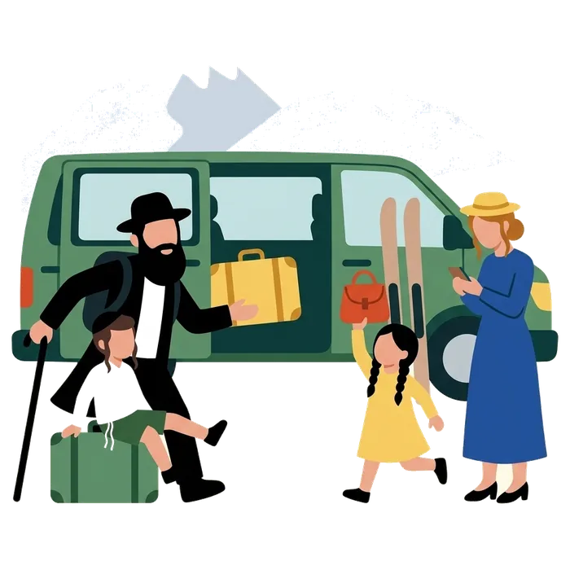

Guided tour of Jewish Lyon
A Jewish guide leads the visit in English, French or Spanish, with the inside of the Grande Synagogue. Sunday to Friday midday.
See the detailsBook on WhatsApp mishpacha tours
mishpacha tours
Home / Jewish Lyon guide / Lyon weather
Lyon has four real seasons. Winter days stay near 7 °C, with frost on about ten nights a month; July days average 28 °C; October is the wettest month. The figures below are Météo-France averages for 1991 to 2020. Further down, a live seven-day forecast tells you what to do this week, and when Shabbat comes in.

 Winter, December to February. Daytime highs of 7.7 °C in December, 7.1 °C in January and 9.0 °C in February; nights at 2.0, 1.1 and 1.4 °C. It freezes on 10 to 13 nights a month. Rain: 41.6 to 53.7 mm a month, on 8 or 9 days.
Winter, December to February. Daytime highs of 7.7 °C in December, 7.1 °C in January and 9.0 °C in February; nights at 2.0, 1.1 and 1.4 °C. It freezes on 10 to 13 nights a month. Rain: 41.6 to 53.7 mm a month, on 8 or 9 days. Spring, March to May, with Pesach. Highs climb from 13.8 °C in March to 17.4 °C in April and 21.5 °C in May; lows from 4.2 to 11.2 °C. May is the wettest spring month, with 80.9 mm over 10 days. Pesach falls in this season, so pack for sun and rain.
Spring, March to May, with Pesach. Highs climb from 13.8 °C in March to 17.4 °C in April and 21.5 °C in May; lows from 4.2 to 11.2 °C. May is the wettest spring month, with 80.9 mm over 10 days. Pesach falls in this season, so pack for sun and rain. Summer, June to August. Highs of 25.6 °C in June, 28.2 °C in July and 28.0 °C in August; lows between 15.0 and 17.0 °C. The thermometer passes 30 °C on 6 days in June and about 11 days in July and in August. Rain: 65.5 to 74.1 mm a month.
Summer, June to August. Highs of 25.6 °C in June, 28.2 °C in July and 28.0 °C in August; lows between 15.0 and 17.0 °C. The thermometer passes 30 °C on 6 days in June and about 11 days in July and in August. Rain: 65.5 to 74.1 mm a month. Autumn, when the rain returns. September is still warm, with highs of 23.1 °C; October drops to 17.7 °C and November to 11.4 °C. October is the wettest month of the year, with 99.8 mm over about 10 days, and November follows with 87.2 mm.
Autumn, when the rain returns. September is still warm, with highs of 23.1 °C; October drops to 17.7 °C and November to 11.4 °C. October is the wettest month of the year, with 99.8 mm over about 10 days, and November follows with 87.2 mm.| Month | Day high (°C) | Night low (°C) | Rain (mm) | Rain days |
|---|---|---|---|---|
| January | 7.1 | 1.1 | 49.8 | 8.1 |
| February | 9.0 | 1.4 | 41.6 | 7.9 |
| March | 13.8 | 4.2 | 49.4 | 8.4 |
| April | 17.4 | 7.2 | 68.9 | 9.0 |
| May | 21.5 | 11.2 | 80.9 | 10.3 |
| June | 25.6 | 15.0 | 74.1 | 8.5 |
| July | 28.2 | 17.0 | 67.4 | 7.5 |
| August | 28.0 | 16.6 | 65.5 | 7.2 |
| September | 23.1 | 12.8 | 82.5 | 7.3 |
| October | 17.7 | 9.6 | 99.8 | 9.9 |
| November | 11.4 | 4.9 | 87.2 | 9.4 |
| December | 7.7 | 2.0 | 53.7 | 9.2 |
Source: Météo-France, climatological sheet of Lyon-Bron, normals 1991 to 2020, station at 202 m altitude east of the city, read on 21 October 2026. Rain days count days with at least 1 mm.
 Winter. A warm coat, a hat and gloves, and shoes with grip: the cobbles of Vieux Lyon are slippery when wet or frosted.
Winter. A warm coat, a hat and gloves, and shoes with grip: the cobbles of Vieux Lyon are slippery when wet or frosted.
Spring and autumn. Layers and a light waterproof. It rains on 7 to 10 days a month in these seasons, and a morning at 6 °C can turn into an afternoon at 17 °C.
Summer. Light clothes, a hat, water and sun cream. July and August pass 30 °C on about eleven days each, so start early and keep the middle of the day for a museum or the shade of the quays.
All year. Shoes for walking: Vieux Lyon is cobbled, the Croix-Rousse is steep and a Shabbat on foot is long. You walk to synagogue in whatever weather there is, so pack a proper coat, not only an umbrella.
Loading the forecast...
Forecast from Open-Meteo, read each time you open the page. The official forecast is on Météo-France.
Rain: museums and covered traboules. Go to the CHRD (Wednesday to Sunday), the Confluences museum (Tuesday to Sunday), the Musée des Beaux-Arts (closed Tuesday) or the Institut Lumière (Tuesday to Sunday). In Vieux Lyon, the traboules take you from one street to the next under cover. Each place is described on Things to do in Lyon.Sun and clear sky: lake, quays and hills. Spend it outdoors: the Parc de la Tête d’Or and its lake, the quays of the Saône and the Rhône, the climb to the Croix-Rousse. In July and August start early and rest at midday; highs average 28 °C and pass 30 °C on about eleven days. Snow in town: time for the Alps. Snow in the city is rare: on average only five days a year stay below freezing all day. When Lyon turns white, the resorts are white too. Take a van to the stations: see the Alps, strictly kosher.
Snow in town: time for the Alps. Snow in the city is rare: on average only five days a year stay below freezing all day. When Lyon turns white, the resorts are white too. Take a van to the stations: see the Alps, strictly kosher. Shabbat entry: 16:30 in December, 21:00 in June. Candle lighting falls as early as 16:30 in December and after 21:00 in June. In winter, end Friday’s sightseeing early and be back at your table before dark; in summer the long Friday leaves room for a late visit. Exact times for this week are just below. See Shabbat in Lyon.
Shabbat entry: 16:30 in December, 21:00 in June. Candle lighting falls as early as 16:30 in December and after 21:00 in June. In winter, end Friday’s sightseeing early and be back at your table before dark; in summer the long Friday leaves room for a late visit. Exact times for this week are just below. See Shabbat in Lyon.This week
Shabbat
in Lyon

Candle lighting falls as early as 16:30 in December and after 21:00 in June.
Late spring and early autumn: highs between 17 and 26 °C in April, May, June and September. July and August are the hottest, December and January the coldest, October the wettest.
Rarely, and not for long. Météo-France counts about five days a year when the temperature stays below freezing all day, and 42 nights with frost. For snow to play in, go to the Alps.
July and August average 28 °C by day and pass 30 °C on about eleven days each. Walk early, give the morning to the quays or the Tête d’Or, and keep museums for midday.
As early as 16:30 in December and after 21:00 in June. This page shows the exact times for this week, and Shabbat in Lyon has the prayer times.
Same-day reply, never on Shabbat.
One request, we organise everything, from the table to the transfer.
A Jewish guide leads the visit in English, French or Spanish, with the inside of the Grande Synagogue. Sunday to Friday midday.
See the detailsBook on WhatsApp
Shabbat meals, meals delivered to your hotel, a minyan close by.
See the detailsBook on WhatsApp
A chef in your apartment or your chalet, in a kitchen made kosher.
See the detailsBook on WhatsApp
Lyon airport, Geneva, the Alpine resorts. Never during Shabbat.
See the detailsBook on WhatsApp
A quiet presence beside your group, only when you ask for it.
See the detailsBook on WhatsApp